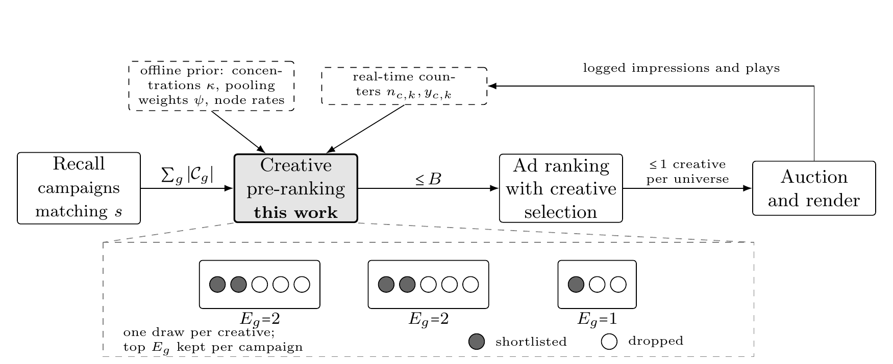

目录 · 9 节
1它到底在解决什么问题？2整体流程3新素材该借多少父节点的数据？4人群组合太多，计数器怎么存？5为什么用抽样而不是均值排序？6实验结果7我认为它的局限8一个推荐或广告团队可以怎么试9总评有了 AI 生成内容，广告主给同一款游戏做很多张不同的封面图和标题几乎不花钱，但每张素材分到的曝光少得可怜，线上又要在几毫秒内决定哪几张送进精排。Roblox 这篇在召回和精排之间加了一层素材粗排：新素材数据不够时先借用它所属计划、所属游戏和目标人群的历史表现，再从这个估计的不确定性里随机抽一个分数排序，让没试过的素材也有机会被展示。回放线上流量，它挑出的候选让精排预估的游玩率提升 8.14%，同样数量的随机候选只提升 2.80%，整条链路耗时只多 0.2%，A/B 之后已经全量上线。
做广告或内容推荐的团队值得读，因为它解决的是一个很常见、却很少有人认真建模的环节：精排之前，每个计划有好几张素材，只能送一两张进去，送谁决定了谁能积累数据。它的方法几乎全是闭式统计，没有要调的超参，线上只做一次加权求和和一次 Beta 采样，所以很容易照搬。需要留意的是，主要证据来自冻结的离线回放，用的是精排模型的预估游玩率而不是真实点击，探索带来的长期收益在这种评估里看不出来。
它到底在解决什么问题？
下面是同一款游戏的一张广告素材，同一个游戏会有好几张这样的图配不同标题。
先看一个例子（示意）。某款射击游戏投了一个广告计划，计划里有 3 张素材：
| 素材 | 历史曝光 | 历史游玩 | 原始游玩率 |
|---|---|---|---|
| A：老封面 | 20,000 | 400 | 2.0% |
| B：上周新做的 | 50 | 2 | 4.0% |
| C：今天刚上传 | 0 | 0 | 无 |
如果直接按原始游玩率排，B 排第一，但 50 次曝光里 2 次游玩可能只是运气；C 没有任何数据，根本没法排。如果按点估计的 CTR 模型排，A 的数据最多、估得最稳，很可能每次都是 A 被送进精排，B 和 C 永远攒不到数据，模型也就永远不会知道它们是不是更好。
论文把这个问题放在一个特定位置：召回之后、精排之前。精排是逐用户的重模型，每多一个候选就多一份计算，所以不能把所有素材都送进去。回放数据里，一个请求平均召回将近 500 个计划、1,000 多张素材，平均每个计划约 2.6 张。全量送进精排的耗时是论文方案的 2 倍。
这一层要同时满足两个要求：数据很稀疏时也能估得准，而且便宜到能给每张召回的素材都打分。论文的做法是故意做得比精排粗：不按单个用户预测，而是按受众人群（由地区等几个离散属性组成的组合）预测，用户层面的区分留给后面的精排。
整体流程

| 环节 | 在哪里算 | 产出 |
|---|---|---|
| 层级先验 | 离线批处理，定期刷新 | 每一层的收缩强度 κ、属性合并权重 ψ、每个节点的游玩率 |
| 实时计数 | 线上，每次曝光更新 | 每张素材按单个属性分桶的曝光数和游玩数 |
| 打分 | 线上，每个请求 | 每张素材一个 Beta 后验，抽一次样作为分数 |
| 截断 | 线上，每个请求 | 每个计划留前 E 张，总数不超过上限 B |
关键分工是：慢变的先验离线算，快变的证据线上读，线上只剩加法和采样。下面拆开讲。
新素材该借多少父节点的数据？
论文把素材放进一棵树里：全局平均、受众人群、被推广的游戏、广告计划、素材，一层套一层。素材 B 的真实游玩率，可以看成全局平均加上每一层各自的偏移。
数据少的节点不能只看自己的原始比率，要往父节点的估计上收缩：
这里 y 是节点自己的游玩数，n 是曝光数，μ 是父节点的估计，κ 是收缩强度。直觉上，κ 就是“自己的数据和父节点的意见各占一半时需要的曝光数”：曝光数等于 κ 时，权重正好一半一半。
用上面的例子算一下（示意）。假设计划层的估计 μ 是 2%，素材层的 κ 是 200：
| 素材 | 计算 | 收缩后估计 |
|---|---|---|
| B（50 次曝光，2 次游玩） | (200×0.02 + 2) ÷ (200 + 50) | 2.4% |
| C（没有曝光） | (200×0.02 + 0) ÷ 200 | 2.0% |
B 的 4% 被拉回到 2.4%，因为 50 次曝光还不足以说服模型；C 直接继承计划的水平。这就是经典的 empirical Bayes 收缩，论文证明了在均方误差意义下这个权重是最优的，而且它恰好等于 Beta 先验的后验均值，所以后面能直接拿 Beta 分布采样。
为什么 κ 不用调？关键在估计“同一个父节点下，孩子之间真实游玩率差多少”。直接算孩子们原始比率的离散程度不行，因为里面混着曝光太少带来的抽样噪声。论文用 meta-analysis 里常用的 DerSimonian–Laird 矩估计：先算按曝光加权的离散度，再减掉二项分布的抽样噪声能解释的那一部分，剩下的才是真实差异。一个只有一个孩子、或者每个孩子只有一次曝光的父节点，没法区分真实差异和噪声，它在估计式分母里的权重正好为零，相当于不参与这一层的估计。估出孩子之间真实游玩率的方差 σ² 之后，这一层的收缩强度就是 κ = μ(1−μ)/σ² − 1，μ 是父节点的游玩率。孩子之间差得越少，σ² 越小，κ 越大，新孩子就越该相信父节点。每一层只需要一个 κ，全部从历史日志里闭式算出，没有任何需要调的旋钮。
人群组合太多，计数器怎么存？
上一步要求知道素材在“这个人群”里的曝光和游玩。人群由 K 个属性组合而成，每个属性最多 m 个取值，组合数是 m 的 K 次方，按组合给每个节点存计数器既存不下，每个格子里的数据也少得没法用。
论文改为只存单属性计数器：素材 B 在“地区=北美”下有多少曝光、在“设备=手机”下有多少曝光，每个节点只要 m×K 个。每个属性桶先算一个提升量：这个桶的游玩率（先往素材整体游玩率上收缩一下，防止小桶噪声）和素材整体游玩率在 log-odds 上的差。请求来了，从素材整体游玩率的 log-odds 出发，加上这个人群每个属性对应桶的提升量，再变回概率，就是这个人群组合的估计。
直接相加有个问题：属性之间往往相关。比如地区和语言高度重合，“北美”桶好看，一部分是因为里面大多是英语用户，两个属性的提升量一相加，同一份信号被算了两遍。论文给每个属性一个合并权重 ψ：两个属性完全独立时 ψ 取 1，J 个属性完全重复时各取 1/J。真实情况在两者之间，所以 ψ 用离线完整的组合数据做一次带 ridge 的 logistic 回归拟合出来。线上存不下组合计数，但离线日志里看得到，这个拆分很实用。用全部取 1 的加法模型作对照，拟合出的权重把重建误差降了约三分之一。
还有一个细节：后验需要“有效曝光数”。各属性桶里的曝光其实是同一批，不能相加。论文取各属性桶曝光数的最小值，理由是这个人群格子的真实曝光不可能多于其中任何一个桶。有了这个人群里的估计游玩率 p 和有效曝光数 n，就把它们折算成 n×p 次游玩和 n×(1−p) 次未游玩，和先验合在一起，得到 Beta(κμ + n·p, κ(1−μ) + n·(1−p))。它的均值正好是前面那个收缩公式，μ 是父节点的估计。
为什么用抽样而不是均值排序？
拿到每张素材的 Beta 后验后，用 Thompson sampling 打分：每个请求给每张素材独立抽一个样，按抽到的值排序。素材 C 没有数据，后验很宽，偶尔会抽到很高的值，于是有机会被送进精排；素材 A 数据多，后验很窄，抽出来总在 2% 附近。不确定性越大，被探索的机会越多，这个比例是后验自动给出的，不用另设探索率。
截断规则也很简单：每个计划的名额是素材数乘以比例 ρ 向下取整，至少 1 个；总数超过上限 B 时，按计划轮流分名额，每轮每个计划拿一个。轮流分配的好处是成本只有 O(B)，而且广告主多传素材也抢不到更多份额。
实验结果
实验回放了几百个 Roblox 广告请求，涉及 10 万以上次计划召回。每个请求用当时线上真实的计数器状态重建后验，再让各种规则在同一批候选上重新选一遍。评价方式是这样的：对每个计划，用线上最准的精排模型给它送进去的几张素材打分，取其中最高的预估游玩率作为这个计划的得分，因为精排最后每个游戏只留一张素材。再把所有至少有两张素材的计划的得分取平均，和 Uniform 的平均分相比，得出表里的提升。
对照规则这样设计：Uniform 每个计划随机送一张；TS-One 每个计划送抽样分最高的一张；RR-Random 用同样的名额和轮流分配，但随机挑素材；TS-RR 是完整方法；Oracle 把所有素材都送进精排，作为上限。
| 方法 | 平均送进精排的素材数 | 相对 Uniform 的提升 | 占上限收益的比例 |
|---|---|---|---|
| Uniform | 将近 500 | — | 0.0% |
| RR-Random | 600 | +2.80% | 15.3% |
| TS-One | 将近 500 | +6.09% | 33.2% |
| TS-RR | 600 | +8.14% | 44.3% |
| 按均值排序 | 600 | +9.51% | 51.8% |
| Oracle | 1,000 以上 | +18.36% | 100% |
这张表把两件事拆开了。RR-Random 和 TS-RR 名额完全相同，只差挑素材的分数，两者的置信区间不重叠，说明收益来自后验本身，多给名额买不到。TS-One 不多送一张素材，提升就是 RR-Random 的两倍多。
成本方面，给所有召回素材打分只要 79 微秒，整个粗排含截断 2.2 毫秒。TS-RR 全链路 41.6 毫秒，RR-Random 41.5 毫秒，只差 0.2%；Oracle 要 83.1 毫秒。这说明粗排的计算量和精排每多一个候选的开销相比可以忽略。
换成另一个线上精排模型重复评估，TS-RR 占上限收益的比例是 44.0%，和主实验的 44.3% 几乎一样。名额很紧时（ρ=0.2），随机挑几乎没有收益（+0.02%），TS-RR 仍有 +3.34%，这意味着预算越紧，挑对素材越重要。
我认为它的局限
第一，探索的价值在这种评估里看不出来。按均值排序比抽样多拿 1.37 个点，因为回放是冻结的：一张素材被展示了，它的计数器也不会变。作者说线上 8.14% 只是下限，这个说法合理，但探索在线上到底多带来多少，要靠自己的 A/B 去测。
第二，素材池很浅。平均每个计划 2.6 张素材，超过一半的计划只有 2 张，粗排基本是二选一。真正用 AI 批量生成、一个计划几十张素材时，后验和截断规则的表现可能不同。
第三，指标是精排的预估游玩率，不是真实行为。如果精排本身对新素材有偏差，评估也会继承这个偏差。
一个推荐或广告团队可以怎么试
- 先离线算各层的 κ：拿一周日志，按广告主、计划、素材分层，用矩估计算每层的收缩强度。看看素材层 κ 有多大，就知道一张新素材大概要多少曝光才能“自立”。
- 在现有素材选择前加一层只用收缩均值的粗排，和随机选比较精排预估分，验证层级先验本身有没有用。
- 再换成 Thompson 抽样，并开一个小流量 A/B，盯新素材的曝光占比和它们攒够数据后的真实点击率，这才是探索的真实收益。
- 人群属性多时，再引入单属性计数器和合并权重，先检查属性之间的相关性，相关性强的属性才值得拟合 ψ。
总评
最值得带走的一点是：决定谁进精排的那一层，同时也决定了系统能学到什么，在这一层用点估计等于放弃了新素材。
| 维度 | 评价 |
|---|---|
| 问题重要性 | 高。AI 生成让素材数量暴涨，素材冷启动是每个广告系统都会遇到的问题 |
| 方法创新性 | 中。收缩、矩估计和 Thompson 抽样都是经典方法，新意在把它们组合成能在线上毫秒级跑的形式 |
| 实验证据 | 中。回放设计干净，对照规则拆得很清楚，但主要证据仍是离线回放 |
| 工程成本 | 低。离线是分组求和，线上是加权求和和 Beta 采样 |
| 是否值得尝试 | 值得。任何“每个计划多张素材、只能送一两张进精排”的场景都能直接套用 |
读完这篇，你觉得
夜读鸮记下了，谢谢你的反馈。
点一下即可，无需登录；再点一次撤回。只统计匿名次数，不记录你是谁。
讨论
欢迎补充实验细节、复现经验或不同看法。需 GitHub 登录。
正在加载讨论…